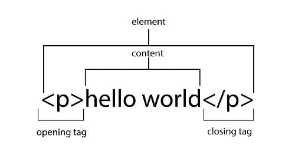

Hallo teman teman!
Jumpa lagi nih. Pada kesempatan kali ini saya akan berbagi pengalaman seputar ngoding website. Biasanya pembuatan sebuah website memerlukan waktu yang relatif lam, baik itu web berjenis e-commerce, profil perusahaan, maupun layanan service.
Lalu, apakah kita dapat ngoding web hanya dalam waktu 15 menit saja? Iya, tentu bisa. Seperti apakah website yang akan kita buat? Penasaran kan? Kamu mesti ikuti terus tips dan trik yang satu ini ya. Simak tuntas dan praktek langsung yuk teman-teman.
Pengertian HTML
 image by:dicoding.com
image by:dicoding.com
Sebelum masuk ke contoh, alangkah baiknya mengenal dulu HTML. Sudah tahu kan apa itu HTML? HTML adalah adalah singkatan dari Hypertext Markup Language. HTML memungkinkan seorang pengguna dapat membuat dan menyusun bagian heading, paragraf, link atau tautan, dan blockquote untuk halaman sebuah website.
HTML sebenarnya bukanlah bahasa pemrograman, artinya HTML tidak punya kemampuan untuk membuat fungsionalitas yang dinamis. Contoh kode atau script membuat paragraf.
Fungsi HTML
Fungsi HTML adalah untuk mengatur tampilan halaman web. Terutama menyusun teks seperti paragraf dan heading, hingga menambahkan link dan gambar. Berikut adalah beberapa fungsi HTML lainnya:
1. Membuat Struktur Halaman Web
Fungsi utama HTML adalah untuk membangun struktur halaman web. Mulai dari membuat header, footer, navigasi, hingga kontennya.
Peran HTML juga sebagai pondasi halaman web. Sebab, untuk menerapkan beberapa bahasa pemrograman maupun bahasa lainnya seperti CSS dan JavaScript, website membutuhkan struktur yang dibangun dari HTML.
Jadi, tak berlebihan juga jika HTML dikatakan sebagai dasar untuk memahami bahasa pemrograman.
2. Menambahkan Konten Website
Selain membuat struktur, Anda juga bisa memasukkan gambar di HTML dan menambah konten pada halaman web. Sebab, bahasa markup ini memungkinkan Anda menyisipkan ilustrasi dan video, membuat tabel HTML, dan memasukkan media lainnya.
3. Mengatur Format dan Tata Letak
Berikutnya, HTML memungkinkan Anda mengatur format dan mengatur tata letak konten dalam halaman web. Seperti memilih ukuran dan jenis huruf, menentukan warna huruf dengan berbagai kode warna HTML, serta mengatur tata letak konten pada website.
Semisal untuk menandai kalimat cetak tebal, gunakan kode HTML
Sedangkan untuk memiringkan tulisan, gunakan tag
4. Mengarahkan Pengguna ke Halaman Website Lain
HTML juga berfungsi mengarahkan pengguna ke halaman atau website lain menggunakan link tertentu. Link ini bisa disematkan ke dalam teks tertentu, alias sebagai anchor text.
Cara membuat hyperlink dengan kode HTML yaitu menggunakan tag a=href"" Misalnya:
Dengan hyperlink, pengunjung bisa dengan mudah mendapatkan informasi yang saling berhubungan dengan halaman yang sedang dibaca. Anda juga bisa mengarahkan mereka ke landing page tertentu
Mengenal Komponen HTML
Setelah mengetahui bagaimana sejarah dan fungsi HTML, sekarang Anda perlu tahu komponen yang terdapat pada bahasa markup ini.
Secara umum komponen HTML terdiri dari Tag, Elemen, dan Atribut.
Lebih detailnya, simak penjelasannya berikut ini:
1. Tag
Tag adalah tanda awalan dan akhiran dalam perintah HTML yang akan dibaca oleh web browser. Tag dibuat dengan menggunakan kurung siku <…>, di mana di dalamnya berisi nama tag.
Setiap tag memiliki fungsi perintah yang berbeda-beda. Mulai dari membuat judul, paragraf, heading, cetak tebal, miring, italic, dan lainnya.
Misalnya:
Tag tersebut akan meminta browser untuk menampilkan teks dengan format tebal
Selain itu, tag ditulis secara berpasangan, yaitu tag pembuka dan tag penutup. Pada tag penutup ditambahkan garis miring (/) di depan nama tag.
Tag HTML sendiri awalnya hanya berjumlah 18. Hingga saat ini sudah ada lebih dari 250 tag. Banyak juga, ya. Namun, Anda tak perlu menghafal semua tag yang ada.
Anda hanya perlu mengingat beberapa contoh HTML untuk pemula berikut ini:
untuk memulai membuat halaman HTML yang mencakup semua konten dan elemen
untuk membuat halaman HTML yang mencakup tampilan deskripsi di hasil pencarian Google, style konten (CSS), dan lainnya.
untuk membuat judul website
untuk membuat isi website
untuk mengatur heading content
untuk membuat paragraf
2. Elemen
Elemen merupakan komponen HTML yang berupa keseluruhan kode dari tag pembuka hingga tag penutup. Elemen terdiri dari teks dan simbol yang berupa tag pembuka, isi tag atau konten, dan tag penutup
Contohnya:
Pada sebuah elemen juga bisa berisi elemen lainnya. Jadi elemen tersebut tak hanya berisi satu tag saja, tetapi banyak tag. Elemen itu disebut nested elements. Sebagai contoh, simak kode berikut:
Jika diperhatikan elemen HTML tersebut, dari tag pembuka html lalu tag body yang berisi elemen tag heading dan elemen tag paragraf.
3. Atribut
Atribut adalah informasi atau perintah tambahan yang berada dalam elemen. Atribut ini berfungsi sebagai penjelas perintah tag pada elemen.
(alt) yang artinya browser harus menampilkan gambar.jpg
Dari contoh di atas, dapat diketahui juga kalau jumlah atribut dalam sebuah tag bisa lebih dari satu. Meski demikian, tidak semua atribut bisa digunakan dalam sebuah tag. Berikut ini jenis atribut khusus beberapa tag:
Selain atribut khusus, ada beberapa atribut yang digunakan untuk menentukan aksi pada dilakukan jika terjadi sesuatu pada elemen.
Misalnya , (onload) saat loading selesai, (onoffline) saat tiba-tiba offline, (onresize) ukuran jendela. Atribut tersebut disebut dengan atribut event.
Atribut tersebut nantinya akan diimplementasikan dengan JavaScript. Sehingga halaman website dapat melakukan aksi tertentu.
Bagaimana Cara kerja HTML?
Sederhananya, cara kerja HTML yaitu bahasa markup ini menyusun halaman website dengan tag-tag tertentu. Setiap tag punya fungsinya sendiri, sehingga Anda bisa membuat struktur dan tampilan konten yang dibutuhkan. Nantinya, browser akan menerjemahkan tag ini untuk ditampilkan pada website.
Lebih teknisnya, seperti ini. Pertama, Anda membuat file HTML dengan aplikasi editor HTML. Lalu, Anda menyimpannya dengan format .html atau .html
Dokumen HTML yang dibuat bisa saja lebih dari satu. Sebab dalam sebuah website, biasanya terdiri dari banyak halaman. Misalnya aja, halaman utama, kontak, blog, dan lainnya.
Nah, masing-masing dokumen, berisi elemen HTML yang akan menyusun bagian heading, paragraf, isi konten, dan lainnya.
Ekstensi file ini dapat dibuka dengan menggunakan web browser seperti Google Chrome, Safari, atau Mozilla Firefox.
Kemudian, agar file HTML dapat diakses oleh banyak orang lewat internet, Anda perlu mengonlinekannya. Untuk melakukan ini, Anda perlu menyewa layanan hosting dan mengupload file website Anda di sana.
Jika sudah upload file HTML, selanjutnya browser akan membaca dan me-render file HTML menjadi tampilan halaman website. Sehingga ketika orang mengakses website lewat internet, mereka dapat mudah membaca informasi yang ditampilkan.
Jadi, Pengertian HTML adalah…
Pengertian HTML adalah bahasa markup yang berfungsi untuk membuat struktur website sehingga dapat diakses secara umum melalui browser.
Meski awalnya Tim Berners-Lee mengembangkan bahasa markup ini hanya untuk kalangan ilmuwan CERN, versi HTML sudah jauh berkembang. Berkat perkembangannya, HTML terus melahirkan berbagai fitur yang dibutuhkan website. Misalnya, versi terbarunya, HTML5.
Tidak sesulit bahasa pemrograman, siapapun bisa belajar HTML dengan mudah. Kuncinya adalah memahami komponen dasar HTML.
.png)